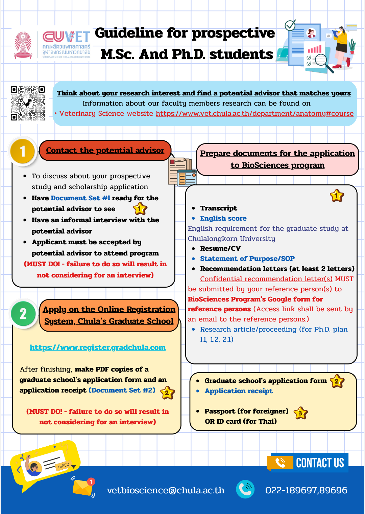
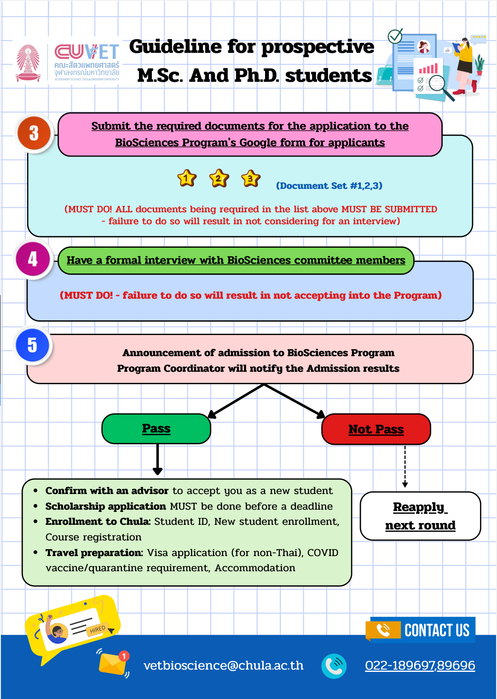

ชีวศาสตร์ทางสัตวแพทย์ (2022)
หลักสูตรบัณฑิตศึกษา สาขาวิชาชีวศาสตร์ทางสัตวแพทย์
ชีวศาสตร์ทางสัตวแพทย์ คืออะไร?
ชีวศาสตร์ทางสัตวแพทย์ คือหลักสูตรวิทยาศาสตร์ชีวภาพที่อุทิศให้กับการศึกษาในสาขาต่างๆ ที่เป็นรากฐานรองรับสัตวแพทยศาสตร์
โครงสร้างหลักสูตร
| หลักสูตร | ระยะเวลาการศึกษา |
|---|---|
| วิทยาศาสตรมหาบัณฑิต (วท.ม.) | 2 ปี |
|
วิทยาศาสตรดุษฎีบัณฑิต (วท.ด.) (สำหรับผู้สมัครที่สำเร็จการศึกษา หรือไม่ได้สำเร็จการศึกษาระดับปริญญาโท) |
3 หรือ 5 ปี |
* ทั้งสองหลักสูตรมี 2 แผนการศึกษาให้เลือก: ทำวิทยานิพนธ์เพียงอย่างเดียว หรือ ทำวิทยานิพนธ์ร่วมกับการศึกษารายวิชา
ทำไมต้องศึกษา ชีวศาสตร์ทางสัตวแพทย์?
หลักสูตรชีวศาสตร์ทางสัตวแพทย์ มอบโอกาสอันยอดเยี่ยมสำหรับการพัฒนาวิชาชีพทั้งในด้านสัตวแพทย์และด้านชีวการแพทย์
หลักสูตรนี้ได้รับการออกแบบมาเพื่อเน้นแนวทางแบบสหวิทยาการในการวิจัยด้านสัตวแพทย์และชีววิทยาศาสตร์ นิสิตของเราจะได้เชี่ยวชาญในด้านกายวิภาคศาสตร์มหพยาธิวิทยา, กายวิภาคศาสตร์จุลทรรศน์, โครงสร้างระดับรังสีและกายวิภาคศาสตร์ประยุกต์, เซลล์วิทยา, ชีวเคมี, ชีววิทยาโมเลกุล และเทคโนโลยีชีวภาพ เพื่อปรับปรุงการจัดการ สุขภาพ และสุขภาวะของสัตว์ นิสิตจะได้รับประสบการณ์จากรายวิชาที่ปรับให้เหมาะสมกับผู้เรียน ซึ่งสอนโดยคณาจารย์ผู้ทรงคุณวุฒิและมีประสบการณ์ นอกจากนี้ยังจะได้พัฒนาทักษะการทำงานเป็นทีม ทักษะการนำเสนอทั้งแบบการเขียนและการพูด และได้รับประสบการณ์การวิจัยในสิ่งอำนวยความสะดวกที่โดดเด่นของเรา
ผู้สำเร็จการศึกษาจากหลักสูตรนี้จะมีความพร้อมเป็นอย่างยิ่งในการเริ่มต้นงานวิจัยของตนเอง ทั้งในด้านสัตวแพทยศาสตร์ประยุกต์และสัตวแพทยศาสตร์คลินิก
สายอาชีพหลังสำเร็จการศึกษา

หัวข้อวิจัยหลัก
ไฮไลท์งานวิจัยในปัจจุบัน
ข้อมูลการรับสมัคร
คุณสมบัติของผู้สมัคร
เอกสารที่ต้องใช้ในการสมัคร
* กรอกแบบฟอร์มใบสมัครออนไลน์ได้ที่เว็บไซต์บัณฑิตวิทยาลัย จุฬาลงกรณ์มหาวิทยาลัย

